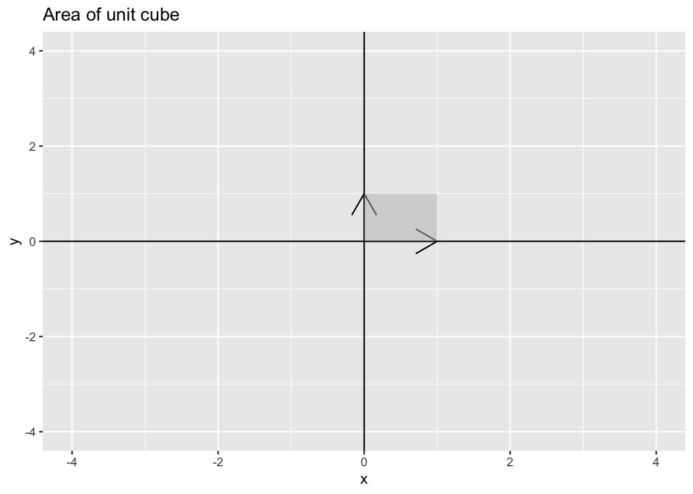
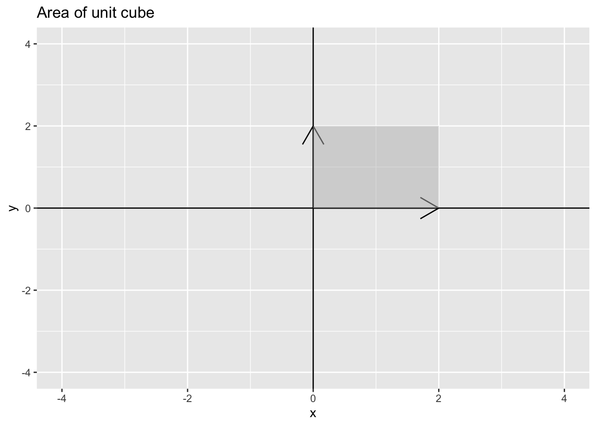

Chapter 14 Determinants and volumes
Definition 14.1 The parallelpiped defined by \(n\) vectors \(\mathbf{a}_1, \mathbf{a}_2, \ldots, \mathbf{a}_n \in \mathcal{R}^n\) with coefficients \(x_1, x_2, \ldots, x_n\) is the subset
\[\begin{align*} \mathcal{P} = \{x_1 \mathbf{a}_1 + x_2 \mathbf{a}_2 + \cdots + x_n \mathbf{a}_n | 0 \leq x_1, x_2, \ldots, x_n \leq 1 \} \end{align*}\]
The determinant is a function that takes the vectors \(\mathbf{a}_1, \mathbf{a}_2, \ldots, \mathbf{a}_n\) that make up the columns of \(\mathbf{A}\) and returns the volume of the parallelpiped \(\mathcal{P}\) defined above add link
Example 14.1 The unit cube: in class–use standard vectors \(\mathbf{e}_1, \mathbf{e}_2\), and \(\mathbf{e}_3\)
Example 14.2 parallelograms in \(\mathcal{R}^2\): the unit square
df_vector <- data.frame(x = c(1, 0), y = c(0, 1))
df_polygon <- data.frame(x = c(0, 1, 1, 0), y = c(0, 0, 1, 1))
p1 <- ggplot() +
geom_segment(aes(x = 0, xend = df_vector$x[1], y = 0, yend = df_vector$y[1]), arrow = arrow()) +
geom_segment(aes(x = 0, xend = df_vector$x[2], y = 0, yend = df_vector$y[2]), arrow = arrow()) +
geom_vline(xintercept = 0) +
geom_hline(yintercept = 0) +
coord_cartesian(xlim = c(-4, 4), ylim = c(-4, 4)) +
geom_polygon(data = df_polygon, aes(x = x, y = y),
fill = "grey", alpha = 0.5) +
ggtitle("Area of unit cube")
p1
Which implies that if \(\mathbf{A} = \begin{pmatrix} 1 & 0 \\ 0 & 1 \end{pmatrix}\) has \(\det(\mathbf{A}) = 1\) because \(\mathbf{A} = \mathbf{I}\) the identity matrix.
## [1] 1Example 14.3 parallelograms in \(\mathcal{R}^2\): A larger square
df_vector <- data.frame(x = c(2, 0), y = c(0, 2))
df_polygon <- data.frame(x = c(0, 2, 2, 0), y = c(0, 0, 2, 2))
p1 <- ggplot() +
geom_segment(aes(x = 0, xend = df_vector$x[1], y = 0, yend = df_vector$y[1]), arrow = arrow()) +
geom_segment(aes(x = 0, xend = df_vector$x[2], y = 0, yend = df_vector$y[2]), arrow = arrow()) +
geom_vline(xintercept = 0) +
geom_hline(yintercept = 0) +
coord_cartesian(xlim = c(-4, 4), ylim = c(-4, 4)) +
geom_polygon(data = df_polygon, aes(x = x, y = y),
fill = "grey", alpha = 0.5) +
ggtitle("Area of unit cube")
p1
Which implies that if \(\mathbf{A} = \begin{pmatrix} 2 & 0 \\ 0 & 2 \end{pmatrix}\) has \(\det(\mathbf{A}) = 4\) because \(\mathbf{A} = 2 \mathbf{I}\) and the rule is for a constant \(c, \det(c\mathbf{A}) = c^n \det(\mathbf{A})\)
## [1] 4The Shiny app below allows you to plot the vector for any \((x, y)\) pair of your choosing.
library(shiny)
runGitHub(rep = "multivariable-math", username = "jtipton25", subdir = "shiny-apps/chapter-14/determinants-volume/") Theorem 14.1 (Determinants and Volume) Let \(\mathbf{a}_1, \mathbf{a}_2, \ldots, \mathbf{a}_n\) be vectors in \(\mathcal{R}^n\), let \(\mathcal{P}\) be the parallelpiped determined by these vectors, and let \(\mathbf{A}\) be the matrix with columns \(\mathbf{a}_1, \mathbf{a}_2, \ldots, \mathbf{a}_n\). Then, the absolute value of the determinant of \(\mathbf{A}\) is the volume of the parallelpiped \(\mathcal{P}\):
\[\begin{align*} |\det(\mathbf{A})| = \operatorname{volume}(\mathcal{P}) \end{align*}\]Proof. Recall the 4 defining properties (Definition 13.1) that characterize the determinant. These properties also characterize the absolute value of the determinant.
From the 4 defining properties, the absolute value of the determinant \(|\det|\) is a function on square \(n \times n\) matrices that satisfies the properties
Row replacement (e.g., row i = row i + c * row j) of \(\mathbf{A}\) does not change \(|\det(\mathbf{A})|\)
Scaling a row of \(\mathbf{A}\) by a scalar \(c\) changes \(|\det(\mathbf{A})|\) by multiplication by \(|c|\)
Swapping two rows of \(\mathbf{A}\) does not change \(|\det(\mathbf{A})|\)
The determinant of the identity matrix \(\mathbf{I}\) is 1
Like the determinant and its 4 defining characteristics (Definition 13.1), the absolute value of the determinant is the only function that satisfies this relationship. Define \(vol(\mathcal{P}_A)\) as the volume of the parallelpiped defined by the rows of the square matrix \(\mathbf{A}\). In what follows, we will show that \(vol(\mathcal{P}_A)\) also satisfies the 4 defining characteristics of the absolute value of the determinant and, by the uniqueness of the function of the absolute value of the determinant, is equivalent to the absolute value of the determinant.
c) We start with showing that row swaps have no impact of the volume of the parallelpiped. Swapping two rows of \(\mathbf{A}\) just reorders the vectors \(\mathbf{a}_1, \mathbf{a}_2, \ldots, \mathbf{a}_n\) and the order has no impact of the calculation of the volume (e.g., area in 2d = length * width = width * length)
a) Consider a row replacement of \(\mathbf{a}_i \leftarrow \mathbf{a}_i + c \mathbf{a}_j\) for some \(j \neq i\). Because reordering has no effect on the volume of the parallelpiped, assume WLOG (without loss of generality–fancy math speak for this one case works for all the other possible cases) that we are replacing the last row (\(\mathbf{a}_n \leftarrow \mathbf{a}_n + c \mathbf{a}_j\)). Then, the area of the parallelpiped is defined as the base times the height. Let the “base” be the set of vectors \(\mathbf{a}_1, \mathbf{a}_2, \ldots \mathbf{a}_{n-1}\) which are the same for the original matrix and the row-replaced matrix. Therefore, if there is a difference in volume of the parallelpiped, it must be due to a difference in height. By definition, \(\mathbf{a}_j \in \operatorname{span}\{\mathbf{a}_1, \mathbf{a}_2, \ldots, \mathbf{a}_{n-1}\}\) so \(c \mathbf{a}_j\) is a vector that points in the same direction as the “base” which implies that translation of \(\mathbf{a}_n\) by \(c \mathbf{a}_j\) is parallel to the “base”. As this is a parallel translation, the distance from the “base” to \(\mathbf{a}_n\) must be equal to the distance from the “base” to \(\mathbf{a}_n + c \mathbf{a}_j\) (the definition of parallel) which means the height is unchanged and therefore the volume of \(vol(\mathcal{P}_A)\) is unchanged by row replacement.
Draw an example here
b) WLOG assume we are scaling the last row \(\mathbf{a}_n\) (we can always swap rows without changing volume so this is ok). Scaling \(\mathbf{a}_n\) by a scalar \(c\) leaves the “base” of the parallelpiped unchanged (the “base” is defined as \(\mathbf{a}_1, \mathbf{a}_2, \ldots, \mathbf{a}_{n-1}\) which are unchanged). Therefore, the only question is whether the height from the base is changed when scaling \(\mathbf{a}_n\) by \(|c|\). In fact, scaling the vector \(\mathbf{a}_n\) by \(|c|\) changes the height by \(|c|\) and therefore the volume \(vol(\mathcal{P}_A)\) is scaled by \(|c|\).
Draw an example in class
d) The identity matrix having volume 1 is easy. The vectors of the identity matrix \(\mathbf{I}\) define a unit cube (technically a hypercube) which has area equal to the product of the lengths of each of their sides, which are each 1.
Because the absolute value of the determinant \(|\det|\) is the only function that satisfies, these properties, we have
\[\begin{align*} vol(\mathcal{P}_A) = |\det(\mathbf{A})| \end{align*}\]
Note: Because \(\det(\mathbf{A}) = \det(\mathbf{A}')\), the absolute value of the determinant is equal to the volume of the parallelpiped defined by the columns of \(\mathbf{A}\) (we could just have easily done all the calculations on the columns of \(\mathbf{A}\) as the rows of \(\mathbf{A}\)).
Example 14.8 Recall that in data science, a probability distribution is function that has volume under the surface of one. For common distributions, particularly the normal/Gaussian distribution, the determinant is the factor that scales the function so that the volume under the surface is one.
The vector \(\mathbf{y}\) is said to have a multivariate normal distribution with mean \(\boldsymbol{\mu}\) and covariance matrix \(\boldsymbol{\Sigma}\) if the probability density function of \(\mathbf{y}\) is \[\begin{align*} f(\mathbf{y}) = (2 \pi)^{-n/2} |\det(\boldsymbol{\Sigma})|^{-1/2} e^{- \frac{1}{2} (\mathbf{y} - \boldsymbol{\mu})' \boldsymbol{\Sigma}^{-1} (\mathbf{y} - \boldsymbol{\mu})} \end{align*}\]
Notice in this equation that the determinant \(\det(\boldsymbol{\Sigma})\) plays a key role in the definition of the probability distribution. This is because
\[\begin{align*} \int_{\mathbf{y}} (2 \pi)^{-n/2} e^{- \frac{1}{2} (\mathbf{y} - \boldsymbol{\mu})' \boldsymbol{\Sigma}^{-1} (\mathbf{y} - \boldsymbol{\mu})} \, d\mathbf{y} = |\det(\boldsymbol{\Sigma})|^{-1/2} \end{align*}\] which implies that \[\begin{align*} \frac{\int_{\mathbf{y}} (2 \pi)^{-n/2} e^{- \frac{1}{2} (\mathbf{y} - \boldsymbol{\mu})' \boldsymbol{\Sigma}^{-1} (\mathbf{y} - \boldsymbol{\mu})} \, d\mathbf{y}}{|\det(\boldsymbol{\Sigma})|^{-1/2}} = 1 \end{align*}\]
In probability and statistics, the denominator is known as the “normalizing constant.”14.1 Volumes of Parallelpipeds
Proposition 14.1 Let \(\mathbf{a}_1\) and \(\mathbf{a}_2\) be nonzero vectors. Then, for any scalar \(c\), the area of the parallelpiped defined by \(\mathbf{a}_1\) and \(\mathbf{a}_2\) is the same as the area of the parallelpiped defined by the vectors \(\mathbf{a}_1\) and \(\mathbf{a}_2 + c \mathbf{a}_1\) (an elementary column operation).
Example 14.9 Draw a parallelpiped in class. recall that areas of a parallelpiped are defined (in 2 dimensions) as the length of the base times the height perpindicular to the base. In 3 dimensions, the volume of a parallelpiped is the base times the width (the area of the base) times the height.
14.2 Volumes of Linear Transformations
Recall linear transformations \(T:\mathcal{R}^n \rightarrow \mathcal{R}^n\) (Section 6) where for any \(\mathbf{x} \in \mathcal{R}^n\) (the domain), \(T(\mathbf{x}) = \mathbf{A} \mathbf{x} \in \mathcal{R}^n\) (the codomain).